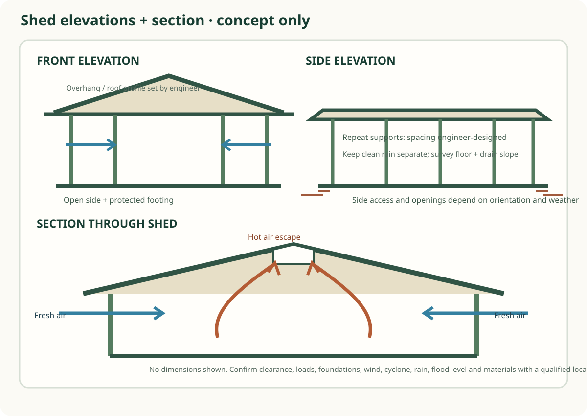
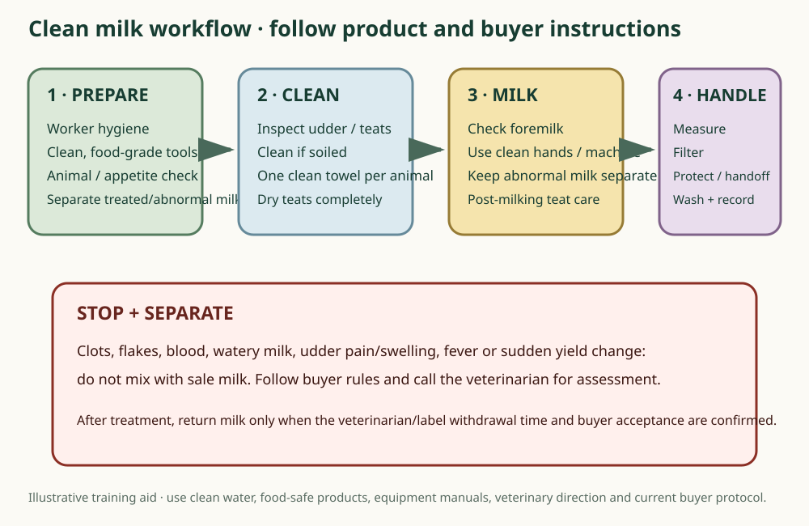

Buffalo breed silhouette
Generic buffalo silhouette; not a breed-identification image.
Original project SVG; no external image license applies.
Locally stored diagrams for understanding the guide. Open any image at full size to zoom. Drawings are conceptual unless a caption explicitly says otherwise; none is a surveyed construction plan or professional approval.
Generic buffalo silhouette; not a breed-identification image.
Original project SVG; no external image license applies.

Conceptual adjacency diagram, not a surveyed plot or construction plan.
Original project SVG; dimensions and placement are illustrative.

Concept shed arrangement; verify dimensions, structure and local rules with a qualified designer.
Original project SVG; no site survey or engineering sign-off.

Concept elevations and cross-section explain relationships only; no dimensions or structural design are provided.
Original project SVG; requires site survey and local engineering review.

Conceptual ventilation and heat-management drawing; not a climatic design calculation.
Original project SVG; verify for actual site and herd.

Separates roof runoff from shed washwater; treatment and discharge route require local approval.
Original project SVG; not a drainage or wastewater design.

Training sequence with abnormal-milk separation; follow veterinarian, equipment and buyer procedures.
Original project SVG; procedure requires local professional review.
Visual assets are served locally from this repository. Attribution and factual limitations appear with each diagram.